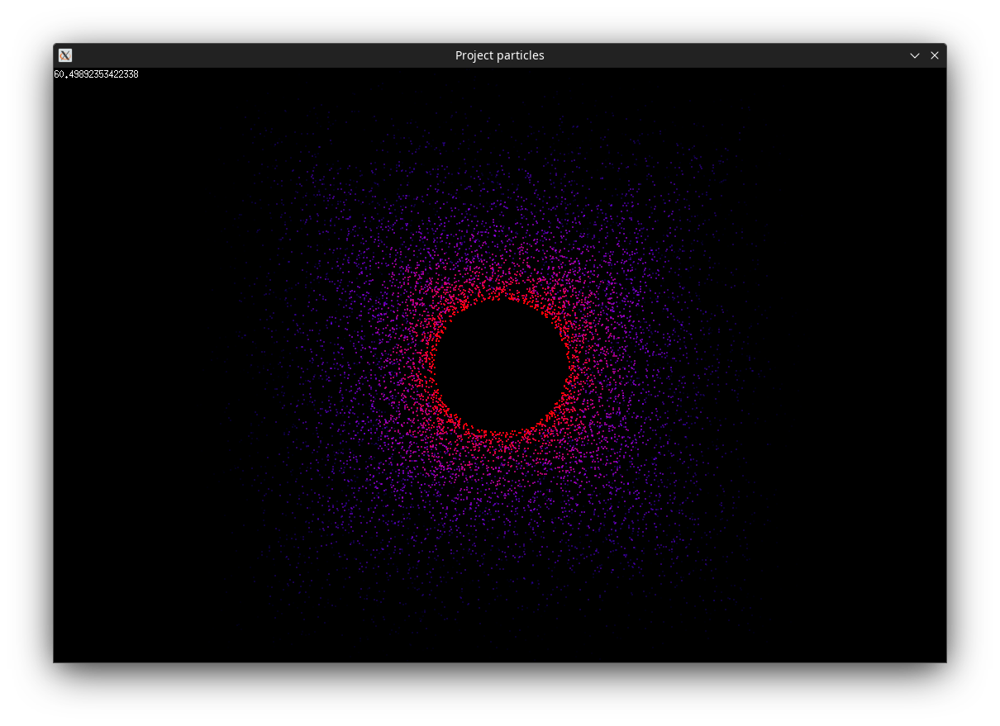

À propos de moi
Je m'appelle Lucas Jonnard, j'ai 19 ans et je suis originaire de Roanne, en région Auvergne-Rhône-Alpes. Je suis actuellement étudiant en seconde année de BUT Informatique à l'IUT de Nantes.

J'ai choisi de faire mes études aussi loin de ma région de naissance afin d'en découvrir de nouvelles. Je suis passionné par la découverte de nouveaux horizons, en particulier par les recoins qu'offrent la France mais aussi par les bâtiments uniques des villes étrangères.
Je voue également une grande passion pour la musique qui m'accompagne tout au long de mes journées. J'adore particulièrement les musiques rock et j'aimerai bien apprendre à jouer du violon.


Une autre activité que j'apprécie beaucoup est le sport qui me permet de me changer les idées et booster mon bien-être. J'aime pratiquer la marche et la course en solo pour me ressourcer et le badminton entre amis pour me dépenser et passer du bon temps.
Je suis fan de l'univers des mangas de type shōnen qui me permettent de voyager à travers leurs histoires mouvementées dans des univers immaginaires captivants. J'aime cependant aussi lire des romans de science-fiction et des courtes histoires sur internet.


Si je devais citer une dernière passion, ce serait celle de la création de petits jeux-vidéos pour m'amuser. J'ai l'habitude de me lancer de petits défis visant à créer de petits jeux-vidéos sous Unity ou autre pour apprendre de nouvelles choses tout en restant dans un esprit d'amusement.
En ce qui concerne mon parcours, j'ai effectué mes années de collège au collège de la Côte Roannaise à Renaison puis mes années de lycée aux lycées Jean Puy et Hippolyte Carnot à Roanne où j'ai obtenu mon baccalauréat général spécialités maths - NSI avec la mention Bien. Je suis actuellement en études à l'IUT de Nantes afin d'obtenir mon BUT Informatique.
Mes compêtences
Développement Web
Je suis à l'aise avec le développement web, notamment en HTML, CSS et JavaScript / TypeScript que j'ai appris au fil d'un projet de création de site web en première année de BUT Informatique. Je me suis également entrainé en réalisant ce portfolio et le site d'un de mes projets personnels 'Seabow' dont vous prendrez connaissance plus tard.
Développement Orienté Objet
Je maîtrise le concept de POO ainsi que la création d'un diagramme représentant les liens entre chaque entité et j'ai appris à l'implémenter dans divers langages tels quel le Kotlin durant mon BUT et en C#, Java et C++ en autodidacte. Je sais mettre en place un système d'héritage entre plusieurs classes pour optimiser la maintenance du code d'un projet.

Développement fonctionnel

J'ai aussi de fortes bases en programmation fonctionnelle grâce à ma maîtrise de langages plus bas niveaux comme le C/C++ et le Go. J'ai appris ces différents langages à travers la programmations de mini-logiciels et d'un projet de générateur de particules réalisé entièrement en Go. Le C et le C++ sont les langages de programmation que j'utilise le plus régulièrement.
Gestion de bases de données
Je sais créer une base de données et lui ajouter de nouvelles tables de données. Je sais également la maintenir en modifiant ses données, les consulter avec la prise en compte de filtres précis et leur ajouter des contraintes d'intégrité pour éviter toute corruption involontaire de données.
Gestion de réseaux informatiques
Je suis à l'aise avec la mise en service de réseaux informatiques en m'adaptant aux contraintes techniques et logicielles. J'ai déjà eu l'opportunité de mettre en place un serveur DHCP ainsi qu'un réseau avec serveur IMAP pour l'envoi de mails. Je sais maintenir un réseau informatique en le faisant évoluer vers de nouveaux protocoles ou en remplaçant les machines obsolètes et en intégrant les nouvelles machines au réseau.
Analyse statistique
Je sais mener une analyse de données en produisant divers diagrammes et en en expliquant les résultats. Je peux aussi utiliser mes compétences dans le langage Python que j'apprend depuis mon année de seconde au lycée et divers modules tels que Pandas afin de générer automatiquement des diagrammes donnés avec diverses données comme entrées.
Utilisation des logiciels
Je maîtrise plusieurs types de logiciels comme les debugger, très utiles pour efficacement fixé les problèmes rencontrés dans le code, mais aussi de nombreux IDE comme Visual Studio (et VS Code), Intellij Idea, CodeBlocks et autres. J'ai également appris en autodidacte à utiliser des logiciels axés sur les jeux-vidéos tels que Unity, Unreal Engine et des frameworks tels que SDL2, sfml ou pygame.
Gestion de projets
J'ai des connaissances me permettant de conduire un projet en organisant celui-ci, en mettant en place des diagrammes explicatifs pour expliquer le but et les étapes du projet. J'ai appris à rédiger un cahier des charges en y listant l'ensemble des tâches de réflexion, une étude de marché et juridique et en y ajoutant des diagrammes modélisant le déroulement du projet et de l'équipe du projet. Je suis aussi capable de mettre en place, partagé et géré un projet GIT afin de faciliter le travail collaboratif.
Anglais
Je possède un bon niveau en anglais et maîtrise un vocabulaire axé sur les technologies et le travail en entreprise me permettant de travailler avec des personnes ne parlant pas ou peu le français. Je sais également rédiger correctement des mails en anglais en respectant les formes principales.
Droits relatifs à l'informatique
J'ai une base de connaissances des droits qui s'appliquent au domaine de l'informatique tels que le RGPD, les licences informatiques et autres. Cela me permet par exemple de vérifier des conformités au sein d'un projet informatique.